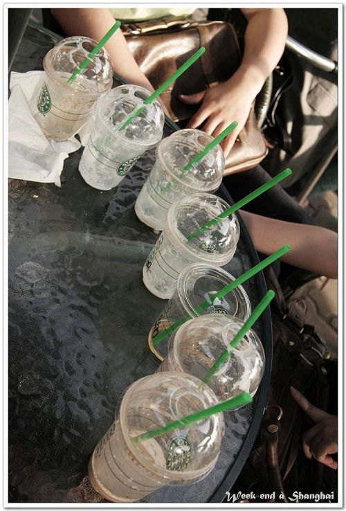
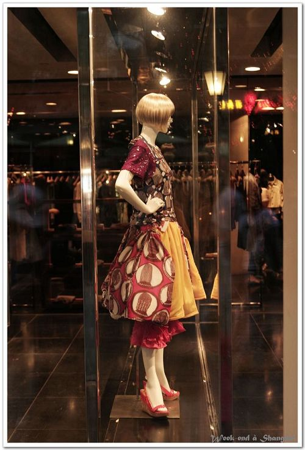
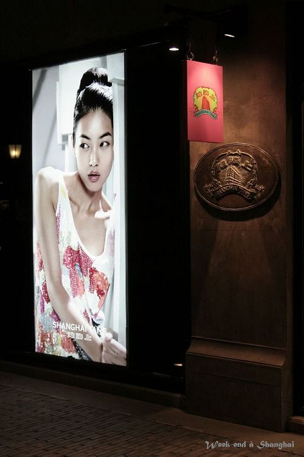
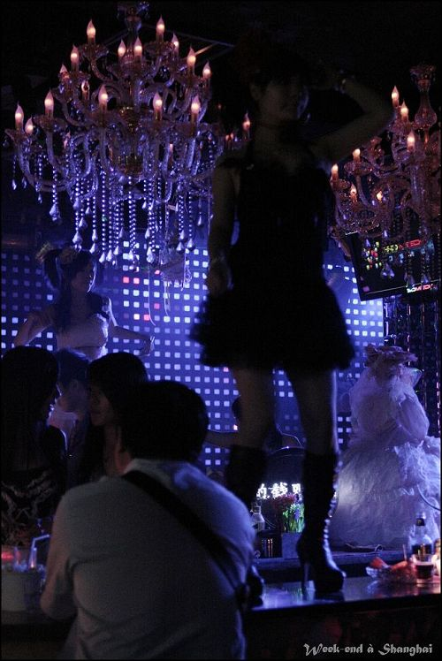

Archives : 2008-06
无字 @ Jun 29, 2008
《ELLE》2006年二月号上有篇文章写到：成功的爱情就是在一起后，两个人都会变得更好。而“好”的标准，只在你自己心里，也许是微妙的幸福感，也许是汹涌的创作欲，也许是名利兼收，也许是痛苦后的蜕变，也可能是，象我们所采访的年轻艺术家彭扬军所说的那样：“我本来从不抬头看天，但和她在一起后，我经常发现原来蓝天这样美好。”
人民币升值背后 （转） @ Jun 25, 2008
相信大家对80年代的“日本经济衰退”和90年代的“亚洲金融风暴”及“香港的香港金融保卫战”吧！也许有人会说那是国际投机集团“美国索罗斯财团”搞的，但是，你就没有想过它背后难道就没有美国政府的支持了吗？下面，我仔细分析一下这些事件的前因后果你就会明白了。
从1980 开始的，特别在1990年和1995年，第一名的美国和第二名的日本之间的GDP差距是多少？日本GDP超过美国GDP的一半！这也是目前为止唯一一次其它国家和美国的经济差距缩小到一半的程度。日本人在欢呼：只要超过美国的GDP，日本就可以恢复“正常国家”了！美国人没有吭声。
按理说，日本还是美国的盟国，其经济也是美国扶持起来的，美国也没有分裂日本的必要（要分裂，二战时就分裂了，也不用等到80-90年代）。美国也不可能对盟国日本使用“颠覆性煽动”，眼看着美国是阻挡不了日本经济的发展前景的了！世界各国都在兴奋的期待着日本GDP超过美国GDP的那个“历史性时刻”！日本企业更加疯狂，美国经济的象征——洛克菲勒广场被日本人买下了！美国的精神象征——好莱坞被日本人买了！美国人民的心情一下子掉到了谷底。 “世界第一” 就快保不住了！美国人民的荣耀感在急剧下滑，民间开始蔓延仇日情绪。
1980年，日本的GDP就快到美国的一半了。有一件事情在 1985年发生了，1985年美国拉拢其它五国（7国集团）逼迫日本签署了广场协议。以“行政手段”迫使日元升值。其实的一个中心思想就是日本央行不得 “过度”干预外汇市场。日本当时手头有充足的美元外汇储备，如果日本央行干预，日元升不了值。可惜呀，日本是被去了势的太监。美国驻军、政治渗透、连宪法都是美国人帮它度身定做的，想不签广场协议都不可能。
日本最后的结局大家也知道了。1985年9月的广场协议至1988年初.美国要求日元升值。根据协议推高日元，日元兑美元的汇率从协议前的1美元兑240日元上升到1986年5月时的1美元兑160日元。由于美国里根政府坚持认为日元升值仍不到位，通过口头干预等形式继续推高日元。这样，到 1988年年初，日元兑美元的汇率进一步上升到1美元兑120日元,正好比广场协议之前的汇率上升了一倍
美国人满足了吗？没有。接着看下去，从1993年2月至1995年4月，当时克林顿政府的财政部长贝茨明确表示，为了纠正日美贸易的不均衡，需要有20%左右的日元升值，当时的日元汇率大致在1美元兑120日元左右，所以，根据美国政府的诱导目标，日元行情很快上升到1美元兑100日元。以后，由于克林顿政府对以汽车摩擦为核心的日美经济关系采取比较严厉的态度。到了1995年4月，日元的汇率急升至1美元兑79日元，创下历史最高记录。
日元升值的后果是什么？洛克菲勒广场重新回到了美国人手中，通用汽车在这个广场的一卖一买中净赚4亿美元！日资在艰难度日中大规模亏本退出美国。美国人民胜利了！成功的击退了日本的经济进攻！我们可以从事例中看看1995年之后，日本和美国的GDP之比重新拉开了距离，而且越来越大！
可能有些网友还是没有明白，日元升值怎么啦？跟我们的谈论有什么关系？日元升值，就是美国对日本的一次经济阻击战！成功的把日本20多年的发展财富大转移到了美国去了。
下面我给个例子大家就清楚了。
假设我是美国财团，我当然知道1985会发生什么，假设我在1983年吧，我用100亿美元兑换成24000亿日元，进入日本市场，购买日本股票和房地产，日本经济的蓬勃导致股市和房地产发疯一样的上涨，1985年广场协议签订，日元开始升值，到1988年初，股市和房地产假设我已经赚到了一倍（5年才翻一倍是最低假设了），那就是48000亿日元。
这时，日元升值到1:120。我把日本的房地产和股票在一年中抛售完，然后兑换回美元，那么，就是400亿美元！在5年时间中，我净赚300亿美元！（还是最低假设）。那么日本呢？突然离开的巨额外资就导致了日本经济的崩溃！经济学用词叫“泡沫经济破灭”。这就是日本常说的：“失去的十年”。而我连本带利的400亿美元回到美国，你想一想，美国经济能不旺盛吗？！！日本“失去的十年”，却正是美国“兴旺的十年”！看看我的上表就知道了。
我只是美国财团中的一个，其它财团呢？嘿嘿，而且我的假设还只是到1988年，如果是到1995年，日元升值到1:79，你我能想象美国在这场经济战争的胜利中，到底从日本刮走了多少财富？
美国赚够了，日元现在又重新回到了1:140的位置上，美元的坚挺依然和30年前一样！美元暂时性的贬值，并没有损害到美元的国际地位。这场美日的经济战争，以美国完胜而告终！！
美国人玩上瘾了。1998年，同样的手法在东南亚四小龙四小虎身上又来了一次，这就是亚洲金融风暴！唯一不同的，这次不需要广场协议了。因为亚洲这些小虎小龙的外汇储备们直接阻击就可以大获全胜！但是，还是没有战胜财大气粗、军事强盛、奉行霸权主义的美国，结局大家也看到了，东南亚货币在先升后跌中，经济发展的成果被美国抢掠一空！！
唯一市场硬挺住了索罗斯的进攻而没有经济崩溃的就只有回归后的香港，保住了香港几十年的发展果实。当时索罗斯发动世界舆论（包括香港舆论），大肆攻击香港政府（中国政府）“行政干预市场”，违反市场经济规则、没有民主自由，要是当时中国屈服于世界的舆论压力而不运用“宏观调控”进行入市干预，那将酿成大祸，又不知道要有多少国人向当年的日本那样因破产而跳楼自杀了！
当时的曾荫权后来说过：“决定政府入市干预的前一晚，我坐在床头哭了，不是为我自己，而是怕这个决定如果错误了，害了香港，我怎么向中央政府向市民们交代。”大家现在知道为什么美国一再要求他国“新闻自由”、“市场经济”、“民主人权”是建立在自己利益的基础上了吧，知道我国的“宏观调控”政策的正确性和优势所在了吧。
美国停手了吗？没有，因为我过综合势力的增长国力的增强威胁到了美国的根本利益和“世界第一”的权威，近来“中国公开支持因儿子丑闻陷入困境的安南，指责美国故意借题发挥进行人生攻击。”就是最好的证明。所以美国心里就不痛快了，就要整人了，现在强迫人民币升值就是消弱中国的第一步，各位明白了吗？知道为什么中央政府突然狂力打压上海和北京的房地产市场？知道为什么中国股市那么惨了吗？央行行长周小川在3月还是4月曾说了一件事情：“有一个40 亿美元的外资在上海炒房地产，已经退出中国了这样的外资，不要也罢！”明白了吗？中国股市是一个弱势股市，很容易被美国财团利用。
中央不可能放松对股市的控制，否则中国经济将会在外资的攻击中崩溃！前段时间，也就是今年的12月初又有一个240亿美元的外资财团撤离中国上海。现在，大家对国家的宏观调控的优势有所理解了吧，知道了国家出台那么多针对房地产的政策是多么的明智和及时了吧（文件详文附在后面，有兴趣的可以读读）！
现在各位知道为什么中国要实行国家外汇管制、汇率控制、打压房地产、控制股市、知道为什么中国要保持巨额外汇储备，为什么最近央行又出台了新的房地产贷款规定，为什么中国政府一直要求进出口贸易平衡，为什么要扩展东南亚贸易市场和欧盟市场，为什么要加WTO了。
其实中美之间的经济战争，早就已经开场了，而且来来回回过了几百招了。我们大多数网友还懵懵懂懂的只盯着台海，盯着中亚美军又多了一个军事基地。要知道经济崩溃的灾难远比一场军事战争的后果更严重。军事战争不外乎两种：即“侵略战争”和“卫国战争”。而军事上的“侵略战争”的最终目的就是打垮对方的一切（军事力量和经济实力）达到占领对方领土，进行资源掠夺和控制奴役和剥削对方的国民。
这样的事情中国历史上没有少发生，这里我就不例举事例了。而如今的美国就是以军事上的侵略战争为手段，达到奴役和剥削对方为目的的真实意图（对实力弱小的国家而言），看看如今的“伊拉克”就明白了，美国实际上是侵略占领了伊拉克，控制了伊拉克的石油，以此来满足美国国内巨大的需求量；而对实力强的原苏联（原苏联拥有制对方死地的核力量），美国就只有发动经济进攻来拖垮他们，苏联的分裂就是最好的例子。
也许有的人要说，那是冷战时期的军备竞赛和当时苏联国内政策导致了原苏联因经济崩溃而解体的。但是，你有没有想过，进行军备竞赛是以经济实力为基础的。当时的美国经济实力比苏联强，所以，美国胜利了而苏联解体了。现在轮到我们了，我国现在的经济和军事实力都没有冷战时期的苏联强大，相同点是我国同样也拥有毁灭美国的核武器，只是数量少了一点而已。那在这一轮中，就要看我国领导人的智慧了，建立合理的政策来规避风险，保护自己是当务之急（可喜的是，现在我国已经在这样做了）。
可是，美国也没有闲着，而且，作为经济进攻的第一步他们已经早早的迈出了，向美国“凯雷财团”这样的世界性投机财团收购中国的“徐州重工”这样的事情已经发生了很多了，在这里我就不一一例举了。他们的目的很明确，控制中国的核心技术，进行世界性的技术垄断，迫使??量。同时乘汇率没有变化之前以美元套取人民币，迫使中国央行大量发行人民币以应付大量的货币兑换需求，为拖垮中国经济打下伏笔。这还是明的进入，暗地里的就更无法统计了。
说到这里，也许有很多人不明白大量美元兑换人民币的行为与拖垮中国经济有什么关系。在这里，我解释一下：在没有大量美国财团恶意涌入中国用大量美元换取人民币之前，我国的经济形式是相对稳定的，但是，实际上，我国发行的人民币的数量远没有我国人民积累的财富数量那么多，因为，任何一种货币，只要能保证本国正常的经济活动就行了，??为印刷货币的成本是很高的。
举个例子：中国有13亿人口，平均每人的财富拥有量为1万元每人，中国总共有13万亿元财富，而现实生活中，每个人不可能把自己的全部财富都带在身上，这里就平均一下，平均每个人身上携带1000元现金（携带量为10%，其实这个量已经是很大了），其余的存在银行，也就是说，在正常情况下的流动现金量（术语为：现金流量）为1千亿元，乘以一定的突变系数，（这里为了便于计算，就理想的取值100%），也就是说在正常的经济活动下，中国只要发行2千亿人民币就可以满足本国的经济活动了。
而大量的恶意的国外财团的资金涌入中国，表面上是拉动了我国的经济，是国内的消费量变大，也就是使国内的现金流量的需求变大，这样，我国为了满足大众消费的需求，就会大量印刷和发行人民币来满足这种需求（当年的日本就是这样）。据统计，目前在国际上金融市场上的投资有136万亿美元。
其中只要有1%涌入中国进行投机经营，按现在的汇率，我国就要发行10.895584万亿元人民币（1.36*7.8644=10.695584 +0.2=10.895584万亿元），货币的发行总量已经超过了我国现有的外汇储备量（1万亿美元）的10倍，算把中国的全部外汇储备都拿来也难对付对手，此时，我国的国有经济就是负9.895584万亿元，不能算上全中国人民的全部财富，因为，国家经济崩溃了，我们手中的财富也就一文不值了。
如果人民币升值以后，他们再用手头的人民币套取美元，中国国内将会余留大量人民币。那样，国人乃至世界将会对中国失去信心，不再储备和使用甚至抛售手中储备的人民币，使中国的外贸活动受挫，最终导致中国国内的通货膨胀，对外导致信誉危机从而导致金融危机。就向40年代的通货膨胀那样一盒火柴要卖几百块。如果我国政府在这次的人民币汇率这件事上决策错误，那么到时中国近30年来改革开放的经济成果就可能就可能落入他人之手。
最近，国内的经济形式来看，客观的将，形式是不容乐观的。按理说，人民币升值了，也就是说钱值钱了，应该是以前1块钱的东西现在只要9毛甚至是8毛就可以买到了；可是现在的国内形式，除了工资没有涨外其余的都涨了。
新华网报道说：自8月份开始，北京市场食用油价格震荡上扬。进入11月份，米价、面价、菜价及副食价格均有不同程度的攀升。报道认为，是受国际大豆市场价格上扬的影响，导致食用油价格上升。但是，米面跟风而涨，25公斤装的富强粉涨幅达12%以上，500克大米上涨了6分钱。据了解，在上海、广州、深圳粮油等生活必需品已是涨升一遍，并持续一个多月，其中面粉、食用油的最高涨幅分别已达一成和二成。
农副产品涨价说明了我国经济在发展和提高。同时，以农副产品的涨价来增加农民的收入，维护社会的稳定，给国家的发展提供了一个良好的国内环境，对国家的发展是有好处的，因为中国农民的数量毕竟占了总人口比例的70%以上嘛。
但是，中国的这四大城市生活必需品的涨价决外偶然。持续7个多月的宏观调控并没有稳定房价，相反，导致房价的节节攀升。早有经济学家警告说，地产泡沫将导致通货膨胀，通货膨胀将引发经济危机。然而，这种声音太微弱，现如今的种种迹象表明，通货膨胀正在步步逼近我们。
对比1996年的东京，1997年的香港，北京、上海、广州，深圳这四大房价居高不下的城市，地产泡沫破灭前的迹象已经显现。试图为了一已私利而继续哄抬房价的地方政府，将迎来经济规律的无情惩罚。因为这一轮的通货膨胀是在毫无防备的情况下发出的，可能还不被官方承认，但它实实在在已经来临了。这种处在萌芽状态的通货膨胀选择了一个导致经济危机的最好时机——2007年的元旦和春节前。因此，危害性和破坏性更大。如果有一天方便面也开始涨价时，这场经济危机已无法遏制了。
柴米油盐、水电油汽的轮番涨价和全面涨价，对中国的富豪阶层的正常生活不构成任何影响，但是千千万万的普通市民将要付出更多的财富以维持和原来一样的生活水准，也就是说，中国的高房价，间接地是由普通城市居民来买单，日本的国民是花了15年的时间，香港的市民就是花了14年。那么，中国的城市居民要花多少年呢？
应对即将到来的通货膨胀，国家自然有金融的手段。可是，中国的人民币在国际市场受到美元的攻击，一年之内升值达5%，而且，还有继续升值的空间。中国的贸易顺差将在人民币的升值中逐渐缩小，国际市场的风险已在加剧。而国内市场生活必需品的全面涨价，将直接影响消费。最后，逼迫央行加大人民币的发行量，中国的通货膨胀就此爆发。这种危机也可能近在眼前。
人民币目前在国际货币市场的遭遇是中国汇制改革以来没有过的事，我们目前已经知道美元要干什么？但是，还由不得我们把国际市场的问题解决好，人民币在国内又是这样的尴尬。在不动产涨价的带动下，生活必需品全面涨价，形成了国际与国内两种迥然不同的市场。从某种意义上来说，这样的市场将走向资本的过度投机。说白了，对内将加剧中国社会的贫富分化，对外给资本大鳄可乘之机。
如果更深层次的分析，人民币似乎是遭遇来自不同方面的围攻，试图将中国30来年经济发展的成果逐步蚕食。接下来，生活必需品的涨幅将进一步加剧，市民的购买力进一步下降，国内市场进一步缩小，中国的产能将进一步过剩，最后，必然导致大量的中小企业破产，经济危机说来就来。
真正要化解这场危机，对目前的经济局势来说，进一步加大宏观调控的力度，理顺房地产市场的管理体制，采取有力措施，坚决把房价降下来，让城市居民在房价下降的过程中感受中国经济的力量，从而增强对未来的信心。也许，这是目前最应该做的一件事，尽管已经做了一些表面工作。
我们要清醒地看到高房价的危害性，尤其是对中国社会的破坏更是史无前例。也许现在还不必过于悲观，一切都应该有转机。谁都知道中国经济发生了重大问题，就象一辆出现明显故障的高速列车，轰轰隆隆往前飞奔，不知何时将会出轨或者颠覆。有经济学家预言，2008年中国经济将会硬着陆，届时，社会动荡不可避免。
那么，出了这么大的问题，而问题的症结究竟何在呢？
发改委专家马晓河指出：我国正在由某一方面的过剩向全面过剩演变。由于产能过剩，内需不旺，中国产品被迫出口，又导致了大量的贸易摩擦，过分依赖国际市场的风险越来越大。马晓河举例说：中国人向世界上的每一个人提供了一双鞋子，可见鞋的产能过剩多少。11月23日，央行副行长苏宁也表示，中国最终消费占 GDP比重已从上世纪80年代超过62%下降到2005的52.1%，居民消费率也从1991年的48.8%下降到2005年的38.2%，均达到历史最低水平。而在中国居民消费率持续下降的同时，世界平均消费率达78%—79%，比较起来差别之大就如天上和地下。
上面两位，一位是宏观经济的专家，一位是金融权威，但指出的是一个共同问题，就是因为内需不旺而导致产能过剩，一旦国际市场出现大的风险，中国将有成千上万工业企业面临生存的危险。
让我们再来看看近几年推动中国经济高速发展的动因是什么：如果总揽中国经济全局就可以发现，推动中国经济高速增长的一是投资，二是消费，三是出口，可以说这是并驾齐驱的“三驾马车。”但是，在我国的实践中是“重投资、重出口、轻消费，”这是问题的表象。为什么中国人会“重投资、重出口、轻消费，”呢？明知消费是生产力，没有消费就没有生产力，这是一个浅显的经济学常识，但是在宏观经济发展的布局上，连马克思的剩余价值理论都不顾及了？
再仔细分析，就会发现很有趣的现象：一是地方政府重投资，前几年表现的是“开发区”热，后来是“基本建设”热，再后来就是现在的“房地产”热；二是大中型企业重工业产品出口，不管是上市公司还是民营企业，只要形成了生产规模，眼光都瞄准了国际市场，大到汽车，家电，小到鞋子，袜子，打火机，一古脑出口。就 “投资”热而言，高房价圈走了老百姓甚至两代人的财富，还有一代人背上了沉重的债务；就“出口”热而言，贸易顺差继续加剧，贸易摩擦不断增多，人民币升值压力越来越大。
有经济学家分析，人民币自汇率改革以来升值了5%，现在的状况是有可能2007年一年就要升值5%，相当于前10 多年的升值总幅度。那么这个后果是什么呢？许多经济学家讳莫如深，我可以大胆的告诉大家，后果就是人民币大量从不同渠道流出境，国际洗黑钱的势力乘机介入，甚至可以把中国贪官的钱都洗白了。
可以说，在2007年之前，只听说外国人到中国来洗钱，这个局面也将因此而改变，中国人终于到外国去洗钱了。再说得深入一点，就是中国人民创造的财富被别人悄悄地“盗走”了，而“盗匪?发改委专家马晓河先生的话头上，看看如何解决产能过剩的问题。其实，很简单，产能过剩的解决之道是刺激消费，而刺激消费的唯一办法就是降低房价。房价不降，中国人对未来的预期必将产生较大的压力而不敢消费，还有一部分成了房奴无钱消费。马晓河先生说，中国工业品利用率有半数低于50%，所以，为了减少风险，必须扩大内需。而内需如何才能扩大呢？
中国居民的消费率是38.2%,世界平均消费率是78%—79%
中国居民平均房价收入比是一比十，世界平均房价收入比是一比多少忘了！
两相对照，中国经济问题的症结就暴露出来，是高得离谱的房价将中国居民的财富搜刮一空，还拿什么去消费呢？所以中国人的消费率创下了历史新低。有专家预测，中国房价每下降一个点，将为市场一年增加100亿以上的消费，而中国房价从2006年前三季度的综合平均价位上，至少有30%以上的下降空间，也就是说，只要中国房价下降30%，中国市场一年将增加3000亿的消费总额，中国经济的问题也迎刃而解，中国民众也从此能过上好日子。
相反，我国要是领导人的决策事物就控制不好这个局面，我国的经济将会崩溃，国内将??我国的国力衰弱后，必将遭受外强的军事打击。我们都清楚我们现在身处的国际环境有多恶劣。面对当前复杂的国际形势，中国一定要具备打赢两场战争的能力，一是军事战争，二是经济战争。
用战争手段夺取别国别人的财富在人类历史上是很常见的。即使在21世纪的今天也还能看到。为了保护中国人民的生命财产，以及可能爆发的军事冲突，中国一定要建设强大的陆军，强大的海军，强大的空军和强大的天军（太空部队）。
在人类进入21世纪的今天，谁占领了太空这个制高点，谁就掌握了未来战争的主动权。任何太空非军事化的想法，只能是白日做梦！
落后是要挨打的！中国只有具备了彻底摧毁对手的实力，别人才不敢欺负中国。
同时，在人类进入21世纪的今天，由于国际交流和贸易的全球化，一场新的战争----经济战争，已经取代军事战争，成为当今世界一部分人夺取另一部分人财产的主要手段
1997年东南亚的金融风暴就是经济战争的一个例子。落后的东南亚国家经济受到了重大打击。国际金融炒家以经济手段达到了以往要用战争手段才能达到的目标。
在少迟一点的香港金融保卫战中，时任香港政务司司长的曾荫权和财政司司长任志刚，在中国中央政府的支持下，用大量外汇储备干预了香港的股票市场。中国中央政府派出了两名央行副行长到香港，要求香港的全部中资机构，全力以赴支持香港政府的扶盘行动。经过几个月的较量，香港政府成功击退了国际金融炒家把香港当作提款机的企图。那次的斗争是非常激烈的，香港恒指变动1点，期货的买卖就会相差2.3亿港币。
香港金融保卫战虽然过去好多年了，我一直在想，如果没有强大中国做后盾，会不会发生“八国联军”攻打香港的可能呢？毕竟香港政府干预香港股票市场违反了当今国际主流社会的“规矩”。
中国航油（新加坡）在国际石油期货市场损失5亿美元和一位中国国资委职员在伦敦同期投资再次被吃表明中国在金融市场方面还有很多东西要学。
就石油这一项，中国现在每年就要多花几百亿美元。现在是中国需要啥，国际商品市场就涨啥。可以说是“抢你没商量”。
然而，石油等商品的价格对中国经济的危害并不是最严重的。真正可能对中国经济的造成严重危害是人民币汇率体系和不断高涨的房地产市场
我总觉得有人要以人民币汇率为突破口，搞垮中国的经济，夺取中国人民的经济成果。从要人民币升值和自由浮动的叫喊声中，我好像闻到了军事战争的火药味。
现在有一个说得比唱得还好听得说法，让人民币汇率自由浮动，由市场来决定。
难道市场是有鬼决定的吗？由市场来决定，听起来挺公平的，大家都有权。但仔细分析一下，世界上有哪个市场不是由少数人操中的呢？让人民币汇率由市场来决定，说穿了就是由他们来决定。
中国政府和人民一定不要忘记1997年东南亚的金融风暴。现在外资的相当一部分是埋下的伏兵。它们就等美国把中国的门撞开（人民币汇价自由浮动），把人民币捧上天，牟取暴利。
总之，中国一定要建设具有一不怕苦，二不怕死精神的强大的陆军，强大的海军，强大的空军和强大的天军（太空部队）以应对可能军事战争。同时中国一定要建设热爱国家，具有国际视野，精通国际竟争规则的金融“铁军”以应对经济战争。只有这样，中国的安全，人民的财富才会得到保护！
此时彼刻 @ Jun 24, 2008
能经常照顾到手脚的女人一定非常有闲。
能每天按摩手脚，甚至在指甲上涂抹喜爱的指甲油对于我是很奢侈的时刻。
压力和忙碌有时剥夺了你作为女人的一些权利。


变 化 @ Jun 23, 2008
一
某一天的变化成为永远
某种原因起因不明
一面镜子弥漫了房间
所有的变化在寻找庇护所
树木在变，然后消失，随季节
她的手势，在镜中，成为太多的事情
你出走，从你的躯体里
谁来追赶这令人心碎的变化
二
必须倾听变化的声音
当我看到年历洁白地行走
有人在红色连衫裙下消失殆尽
倾听变化的声音使我理智
让我拉开与生命站立的位置
假装我是一个顽强的形体
变化的声音在内部行走
站在镜前，她成为衰老的品尝者
她哭喊着，从悲伤中跌下来
当我看到，一对夫妻醒来
整夜忍受着不确定的爱情
蒸发出无休止的谈话
年历洁白的行走，带来
一点点死亡，画着圆圈
真实是变化的中心
有人在红色连衫裙下站立
抽象地站立，稻草人在八月
找到生命和生命之外的所有联系
消失殆尽的是一种意识的形体
意识睡着了，形体也悄然无语
必须倾听变化的声音
－翟永明
[诗人简介]
翟永明，祖籍河南，1955年生于四川成都。1980年毕业于成都电子科技大学。作品曾被翻译成为英、德、日、荷兰等国文字。出版的诗集有《女人》（1987）、《在一切玫瑰之上》（1992）、《翟永明诗集》（1994）、《黑夜里的素歌》（1997）、《称之为一切》（1997）。现居成都写作兼经营“白夜”酒吧。
周末看电影 @ Jun 23, 2008
约了星期六一起看电影，与老妈还有刚刚中考结束的外甥女。
在澳门豆涝吃过午饭，径直去上影影城（以前的华纳）买电影票。正在上映的影片：《功夫熊猫》、《耳大有福》、《深海寻人》、《纳尼亚传奇2：凯斯宾王子》......到电影院看电影毫无疑问会选择大片尤其是有声效的电影，所以毫无疑问的选择了《纳尼亚传奇2：凯斯宾王子》。
看完后仍然回味无穷的外甥女嚷嚷着以后有类似的片子一定要介绍给她...而我则感觉电影院放映的效果未必比家庭影院好到哪里去，清晰度、色彩方面不如在家里看大电视。可是....我在家里看《纳尼亚传奇1》时因为电影节奏太慢居然睡着了。
不知道这部电影是否会和少儿图书《纳尼亚王国》一样拍到7集？第二天给外甥女买了很多适合少儿看的魔幻DVD，那么多碟子把她乐坏了，而我因此感到很快乐。因为《纳尼亚传奇2》正在上映，好些人来找《纳尼亚传奇1》，本周居然缺货。

喜欢的设计 @ Jun 20, 2008
朋友向我推荐了一个新上柜的首饰品牌，说肯定符合我的审美，翻过首饰画册立刻喜欢上它的设计。非常有意思的是顾客可以自行选择挂坠，一个两个...N个搭配着戴。
就象吃过“翅爽”，朋友讲好东西不要介绍给别人，要自己留着，所以我还是不讲这个首饰的名字啦：）我是一根筋的人，喜欢什么东西会一段时间盯着买，压根不去看其他相似产品是否还有更好的选择，可一旦注意力从A转移到B，起初心里感觉会对不住A。然而设计师换了，设计风格肯定也会变，不转移是不是也对不住自己呢？人，都是自私滴，不是吗？

油价又涨了 @ Jun 20, 2008
姐夫发来短信说明天油价可能会涨，晚上把油箱加满吧。
昨天晚上每个加油站等待加油的车排着长龙，要么加油站暂时关闭。
今早上听说93#油价涨到5.94，97#涨到6.28。
那些加油站的工人唠唠叨叨的：“有人就加100块钱的油，还有加几十块钱的，还是今天加完以后就不加油了...”这里面不乏宝马之类的高档车，无论穷人还是富人，全世界人民都喜欢占便宜，通性。
数学.题 @ Jun 18, 2008
充实的工作了一整天，几乎80%都是和价格有关。
想到“生命诚可贵，爱情价更高”，这句仿佛在谈精神又的确谈到了“价”格？
在日新月异的涨价时代是否什么都可以抛？
这时代有不涨价的东西吗？
涨价是复杂的数学题，复杂意味着不纯粹不单纯...
接着咋就想到“这时代还有纯洁的婚姻吗？”
越是那些表面看似完美的，虚假的成份却更多。
粉饰得越好越不是他/她说的那样。
真可谓：外面的自己做着大众认可的事儿，里面的自己却总在背道而弛。
谁真正有权利站在道德的审判席上指手画脚？你？你？还是你？
想爱就去爱吧，不必那么虚伪。

参展 @ Jun 17, 2008
公司选了我拍摄的三张照片到集团参加展览，洗出来的色彩与我在电脑上看到的不同，效果必然会不同，而且用的是白底板，如果是黑色的可能会好一些。兄弟公司有个人摄影作品真是狂好，据说是南艺毕业的，在企业里搞样宣，用的都是公司配备的高档设备，羡慕啊~所有展出的作品都放在大厦走廊里，同时还有一些书画作品，相信还有高手没参加这次活动，所以给了我这种爱好者展示的机会。通过看展览反省自己目前还做不到有条理的管理自己拍下的照片，这个特别需要改进。
我最喜欢的是这幅照片，它包容着丰富深沉的情绪，每每看久了都会很着迷PP中的氛围。
没想到会有知音，被选中拿去参展。
经典台词 @ Jun 15, 2008
1、《恋爱中的犀牛》
忘掉她，忘掉你没有的东西，忘掉别人有的东西，忘掉你失去和以后得不到的东西，忘掉仇恨，象犀牛忘掉草原，象水鸟忘掉湖泊。忘掉是一般人能做到的唯一的事。但是，我决定不忘掉她。
2、《艳遇》
顾客永远是对的；员工永远是错的；老板永远是好的；薪水永远是低的；工作永远是幸福的；加薪永远是幸运的；看着别人被炒鱿鱼，永远是幸灾乐祸的。
3、《镜花水月》
有一种爱情现在就象纯净的空气，越来越稀有了。
4、《女人说相声》
恋爱是病？
全世界最严重的病。
没错，之前越快乐，之后就越痛苦。这就是恋爱病的特性。
5、《两只狗对生活的意见》
我闭上眼睛再睁开眼睛，一天已经过去了。如果我闭上眼睛，不再睁开眼睛了，我这辈子也就过去了。
6、《琥珀》
现在你是我的。现在爱情和痛苦和劳作都应该入睡。黑夜转动它那看不见的轮子，你在我身边纯洁如一枚入睡的琥珀。
7、《如影随行》
我必须承认我卡住了，我在一个奇怪的地方，只能叫这个地方“之间”。什么之间？我不知道。死亡和投胎之间，睡着和睡醒之间，吃饭和吃饱之间，幻想和停止幻想之间，日日夜夜之间，春夏秋冬之间，吸气吐气之间，被人创造跟被人遗弃之间，在虚空中流浪和等待被发现之间......反反复复，直到永远！
8、《暗恋桃花源》
一切都停止了，这夜晚停止了，那月亮停止了，那街灯，这个秋千，你和我，一切都停止了。
home in mind @ Jun 15, 2008
离开温暖舒适的家，人往往可以遇到另外一个自己。

令人心声启迪的Elizabeth Gilbert，一个三十四岁的离婚女子，回首来时路，怅然若失。她撰写的《Eat, Pray, Love》，荣获时代杂志2008百大最有影响力的人物，雄踞2007年全美年度畅销排行榜第三名，连前美国第一夫人希拉里-克林顿对它都青睐有加。超过在美国大热的《灿烂千阳》、《追风筝的人》和《大象的眼泪》。
懂得放弃和改变的女人，即使我们不再漂亮，不再年轻，仍然可以一辈子做女孩！作者Elizabeth Gilbert在小时候有个梦想：长大后会是儿女成群的妈妈。但在30岁以后，她才发现自己既不想要小孩，也不想要丈夫。在令人疲惫的婚姻结束之后，作者在意大利、印度、印尼三个不同国度之间寻找自己，Elizabeth离开纽约只剩下自己一个人的“家”，在意大利，她的灵魂再生；在印度，她洗涤了混乱的身心；在巴厘岛，她寻得了身心的平衡。这一年的流浪，让她发现“拯救我的人，并非王子，而是我自己操控我，拯救我”。
社会学家李银河说：“女人首先是一个人，其次才是一个女人。我认为本书的作者写出了女人的心声。越来越多的女人会认识到：女人有自己独立于男人的价值。”相信她会找到自己的家，无论它在哪里。
作者简介：伊莉莎白·吉尔伯特，小说家、新闻记者、两度获得National Magazine Award 深度报导奖，作品The Last American Man 入选美国国家图书奖决赛名单及2002年纽约时代年代好书，故事集Pilgrims获得Paris Review 最佳新人小说等奖项。曾为知名杂志GQ、Bazaar、The New York Magazine撰稿。
迷#宫... @ Jun 14, 2008
这个城市进入梅雨季节了，下着绵柔的阴雨，城市被洗刷成干净透明的灰色。
穿梭于这个城市，心就这么忽然被刺痛了，那些悲伤过的悲伤，困扰过的困扰，那些纠缠过的纠缠，不会再被刺痛的刺痛...无缘由的在雨季猛烈地摇晃着你所有纤细的神经...逃亡式的奔走于黑夜伴着王若琳的《迷宫》 。这个城市究竟是幸福还是悲伤的？
旧式的传统女人，是煎好的荷包蛋，失去了壳也失去本来的形状，安分守己的任君享用。新式的现代女人，则是水煮蛋，没有去壳也保留住自己的原来的形状，让男人往往心力交瘁，难以掌握。性急的某些男人于是发火了，忘记了自己原来是要与女人相爱，与女人建立关系的，他们想把女人控制住，女人若想逃跑，便与女人为敌，直到踩碎或者嚼碎她们。比较可惜的是，王蓝田到最后始终没有品尝到鸡蛋的好滋味；某些男人，也无法了解被女人深深爱着是怎样的幸福。（张曼娟）
夜，已深。
还有谁在与中国茶相伴？
15 Jun 2008 00:35:43 vivian的且行且纪
心有猛虎，细嗅蔷薇。盛宴之后，泪流满面。
15 Jun 2008 00:00:09 82.67.246.38 ram94-1-82-67-246-38.fbx.proxad.net
http://www.baidu.com/s?wd=Chinese+tea
丢了Te Cinese，丢了Chinese tea，丢了lifetea...自己已经找不回来了？

我们俩 @ Jun 13, 2008
这两个娃娃较成人化，做的也不是那么的唯美，倒显得真实可爱。
从小不太喜欢布娃娃的我却被吸引在橱窗外，拍下她们暖暖的友谊。

微笑的肌肉从什么时候开始僵硬的？
谁也不知道。那部分肌肉需要锻炼啦。

两个外国人相遇了。 @ Jun 13, 2008
孕妇MM说有一天她在路上看到一只西瓜瓢虫和一只苍蝇遇见，都不往前走，就这么对望着...“哦，两个外国人相遇了。”我说。孕妇MM为此暗自乐呵了好几天，其实70年代人和80年代人，似乎也有点外国人相遇的感觉？！
孕妇MM于5月19日顺产了一位健康的公主，每次去都只能看到她的侧面。

行胜于言。 @ Jun 13, 2008
不知道是受了什么的影响，从青春期开始我就喜欢听好听的话。
妈妈常说：“你就喜欢听别人说好听的，所以你很容易上当受骗。”
有个80年代的小丫头以前常对我说：“你真呆，你怎么怎么.....你真呆...”
我的确没有看上去那么聪明，如果正处于爱情和友谊，情况就更糟啦。
现在想来也许天生爱幻想，加上从小喜欢看文学书，渐渐喜欢天马行空不切实际，待人看事，总把对方想的很好，考虑问题、做起事来也就简单直接。这么看，我似乎应该是个浪漫的乐观派？
回望过去十年，所有的人和事都不是想象的那样，而我的心理发育总是滞后于生理发育，我把一切想的很好，或者说期望的很好，正常状态下只一件事，你便了解真实，爱情和友谊中却需要经历N件事才愿意承认。
听到有人说以后我会如何如何，我会怎么样怎么样，这些事情不是这样是那样的，是别人怎么怎么......空洞的许诺和推卸责任一样都是屁话，原谅，意味着你违背了自己的原则，同时又给了对方再次伤害自己的机会。不要听他/她说了什么，而要看他/她做了什么。语言其实挺....用北京话讲叫“不靠谱”，用南京话讲叫“不上路子”。
行胜于言，永远是真理。
呆人，总会有呆福自己撞上门来~
姐姐家的晚饭 @ Jun 05, 2008
难忘姐姐家吃的晚饭。
红烧青蛙、清炒菊叶、膳片炒洋葱各一盘，盐水河虾和一碗西红柿蛋汤。
青蛙里加了某种十三香调料，麻辣鲜十足。姐姐家楼下的菜场到傍晚会有人来卖青蛙，一盘青蛙姐姐跑了三趟才买到，除了青蛙个头小以外口味和沸腾鱼乡的谗嘴蛙有的一拼。姐夫烧的西红柿蛋汤，金灿灿的，好看又好喝。以后要学着烧成这样的口味。
有一天比较饿，在家里翻看烹饪的书，128种大众菜肴做法，越看越有意思，发现自己对于美食还是颇有兴趣的。
老矣心态。 @ Jun 02, 2008
整个周末感觉都在开车，开到令人发指的地步，今生都不想再开车了，想来受身体的影响，累到四脚朝天，丝毫没有快感。二十几岁总想从这个城市流浪出去，现在却时刻都在想念这个城市。总之厌恶之极扎堆的环境，这就是我老矣的心态。







